Lead UX Designer · Glasgow, UK
Vicky
Kingrani
I lead design for expert-user enterprise software — the kind that runs trading floors, hospital networks, pharma supply chains, and data-protection offices.
Open to UX roles · anywhere expert users live inside complex systems
From agency generalist in Pune to sole UX for a tier-1 investment bank's risk platform
Agency generalist to UX practitioner. Manager of twelve, then back to sole designer when the work needed depth. Each move was deliberate.
Thirteen years pulling apart dense, high-stakes workflows and rebuilding them around how expert users actually work. In market risk, clinical operations, supply-chain compliance, telecom operations, e-commerce, and GDPR tooling deployed across hundreds of schools, a confusing screen is rarely just inconvenient. It's a control gap, an audit finding, a stockout, or a breach. I've shaped UX strategy across consulting, agency, and in-house roles — as a hands-on designer and as a mentor — building team practices and design systems the rest of the team kept using after I moved on.
The shape is intentional. Years building team practices in agency and consultancy taught me what a design organisation needs. The most recent chapter is where I've gone deepest — sole designer accountable for a regulated platform under FRTB and Basel III, applying a global design system across four interlocking products.
Seven case studies across finance, healthcare, pharmaceutical supply chain, telecom, and cybersecurity.
Most of the work here is in expert-user enterprise software — the kind of product that doesn't get redesigned often, and matters when it does. A few of the cases are deep dives across multiple slides; others are single-slide features focused on the design decisions that mattered most. The seven are a selection: another sixteen-plus projects across e-commerce, kiosk retail, data-centre tooling, and food service sit behind them.
Screens recreated and sanitised; data illustrative.
Case 01 · Tier-1 Investment Bank · Market Risk Analytics
Modernising a ten-year-old risk analytics platform
Senior risk analysts had abandoned an expert tool and were running their daily FRTB, VaR and IMA DRC work in Excel instead. As sole designer, I researched why the platform kept losing to a spreadsheet, then redesigned it around how the work actually happens.
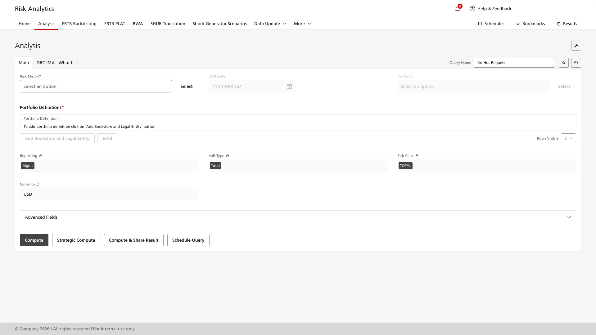
Case 01 (continued) · The shadow-system problem
11 of 11 analysts interviewed exported risk data to Excel
Every analyst kept a personal Excel workbook running alongside the platform — comparison and annotation work happening outside audit control, on data meant to stay inside a regulated environment. The platform gathered the data; Excel did the analysis.
“After waiting for an hour, if it only gives me error messages, I feel like I am losing my work.”Senior risk analyst · survey response
One static form was serving three different working modes
A Daily Analyst needed 5 inputs. A Methodology Expert needed 50+. A new Market Risk Officer needed guidance, not raw fields. One unchanging form asked all three to navigate the same density.
Runs daily VaR — 6–7 queries a day, up to three windows in parallel. Five inputs, the same most days; the rest of the form was noise.
Builds parameter releases and what-if stress scenarios. Needs the full 50+ parameter space the Daily Analyst calls noise.
Joined within the year; reviews what comes out. Needs guided defaults and a discoverable surface, not field density.
Role-based clarity
Deleting fields was never an option; every field existed because some working mode needed it. The move was to make the system respond to which mode the analyst was in — contextual loading, progressive disclosure, and in-app collaboration.
The surface responds to the metric selected
FRTB and VaR run on two different calculation engines; the analyst never has to care. One surface keeps its shape and swaps the component beneath it.
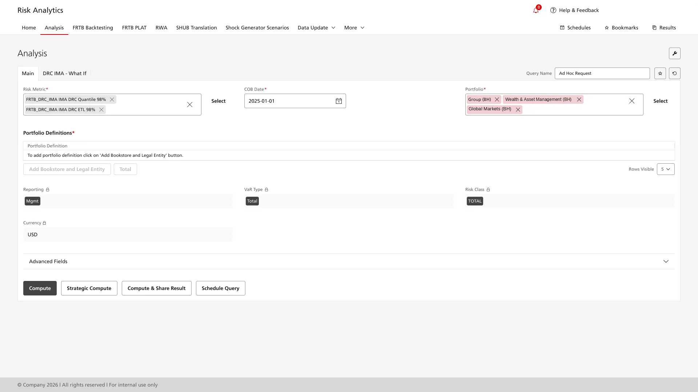
Portfolio scoping stopped hiding the page
Selecting a portfolio used to mean digging through nested trees in a dialog that covered the page being configured. The redesign puts both hierarchies side by side, with filters at column level and selections always in view.
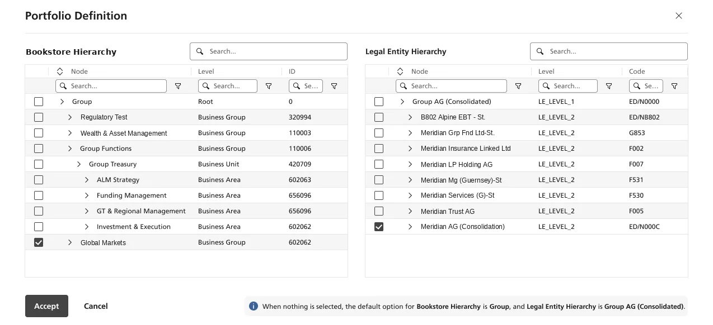
Metric selection by regulatory framework
Hundreds of metric variants, previously one flat list, now grouped by framework with search and multi-select — and combination rules enforced in the interface rather than remembered by the analyst.
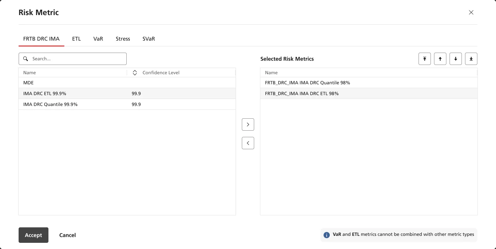
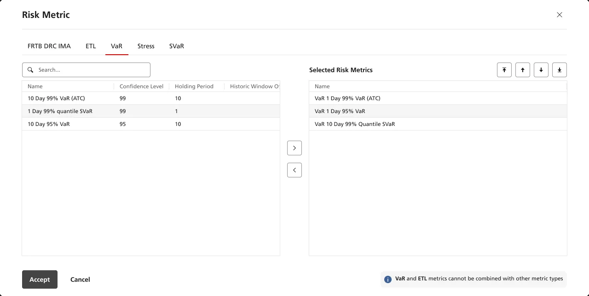
Efficiency restored
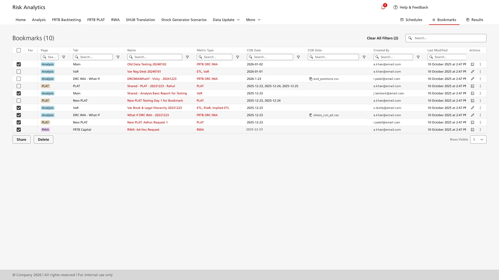
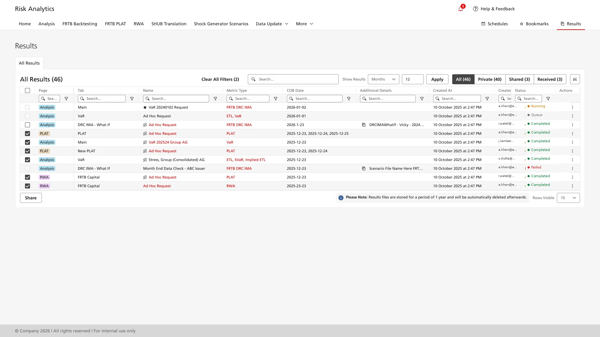
Replacing a legacy CRM-based ticketing system handling 467,000 tickets a year
A major global telecommunications operator's Global Operations Centres in Mumbai, Manila, and Denver were managing service delivery tickets through a legacy desktop CRM platform. The platform processed 467,654 trouble, change, and maintenance tickets annually. Engineers had no orchestration tools, no way to prioritise across the queue, and the interface required extensive training before new joiners could operate independently.
Mumbai · Manila · Denver — Global Operations Centres
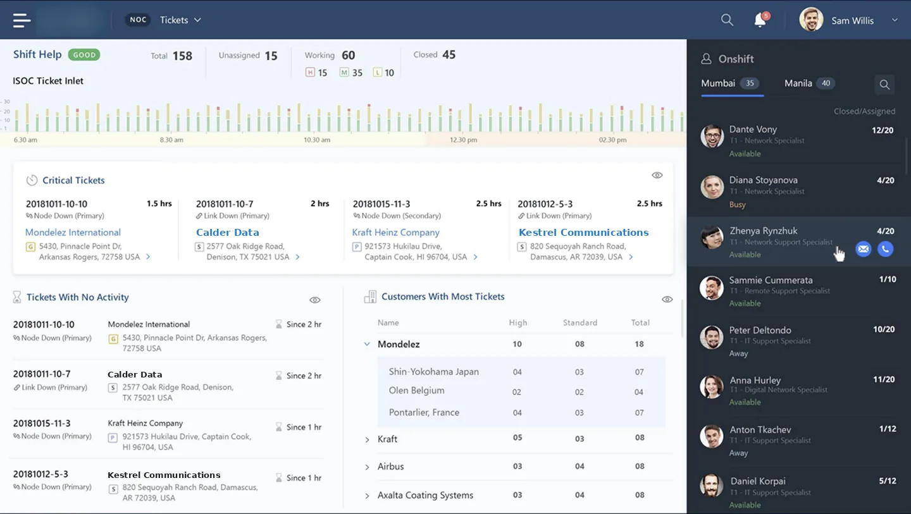
SUS lifted 31 points, 52 to 83, across pre- and post-redesign usability sessions with the operations teams — well above the 68-point industry-average threshold.
- Service-delivery workflow automated end to end Information that used to be scattered across portals now flows in-product.
- Time and effort to traverse and track orders reduced Sortable queue and contextual detail removed the multi-portal lookup pattern.
- Documentation surfaced in context Order documentation appears alongside the ticket rather than via separate searches.
- Research scale The project team ran 100+ research sessions across three operations centres in three countries; the findings informed the redesign.
Rebuilding a CRM around banker workflows, not the org chart
A top-tier US national bank's CRM had grown into a complex three-column interface with deeply nested navigation. Bankers managed pipelines, deal tracking, customer profiles, and tasks from the same surface — but the information architecture reflected internal departments, not the work bankers did.
Every new feature meant custom development. The brief was structural: redesign around banker workflows, then rebuild on a foundation that could carry future change without re-coding it from scratch.
Create and update company and contact records, attribute changes, ownership transfers.
Assign programmes to contacts; track engagement back to relationship managers.
Capture meeting outcomes, link them to deals, surface the next action automatically.
Move deals through stages with full context preserved — handoffs without loss.
The banker workflows the redesign had to unify — drawn before screens, to pin down the actual surface area before any IA decisions.
Mapping the journey before redesigning the screens
The redesign needed structural change, not a screen-level refresh — and that meant I had to earn stakeholder buy-in for that scope before any visual design started.
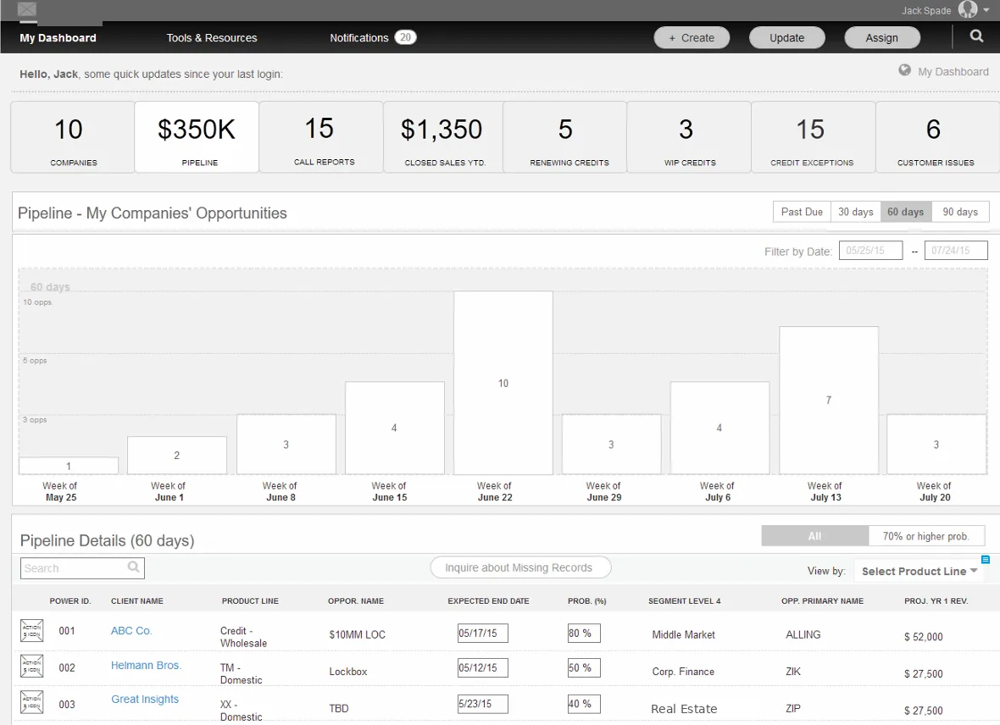
Four moves that earned stakeholder buy-in for structural change
With relationship managers, branch staff, and back-office teams. The bank had existing personas; many were out of date or missing entirely.
For client onboarding, deal management, and dispute resolution. These sessions surfaced redundancies the bank had not noticed — tasks duplicated across teams, handoffs that broke context.
Navigation was restructured around banker tasks rather than departments, validated through mid-fidelity layouts. I designed the wireframes and refined them for stakeholder review.
Pipeline view density, task list patterns, side panel behaviour — to resolve disagreements with data rather than opinion.
The library was the project's real payoff, not a side deliverable. Subsequent CRM features got assembled from existing blocks rather than custom-coded, compressing the delivery timeline on every feature after the first.
Unified pipeline, contextual detail, analytics on the same surface
Three views of one surface, built from the same component library. Pipeline is the primary canvas; the side panel and analytics are different cuts of the same data, never the analyst leaving the pipeline view to access either.
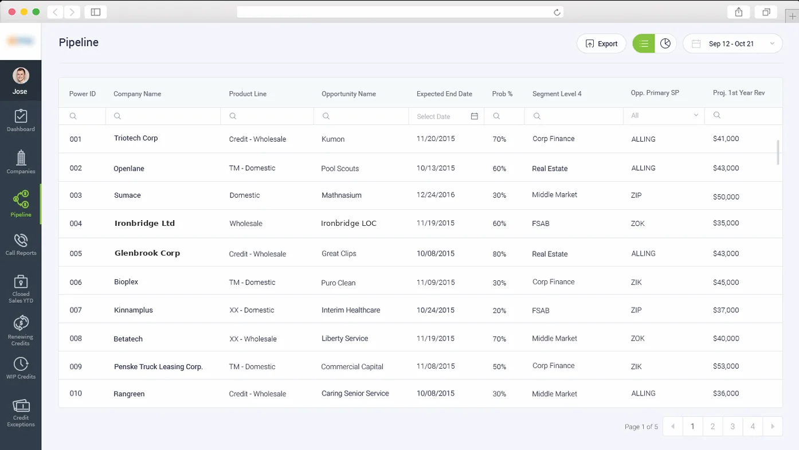
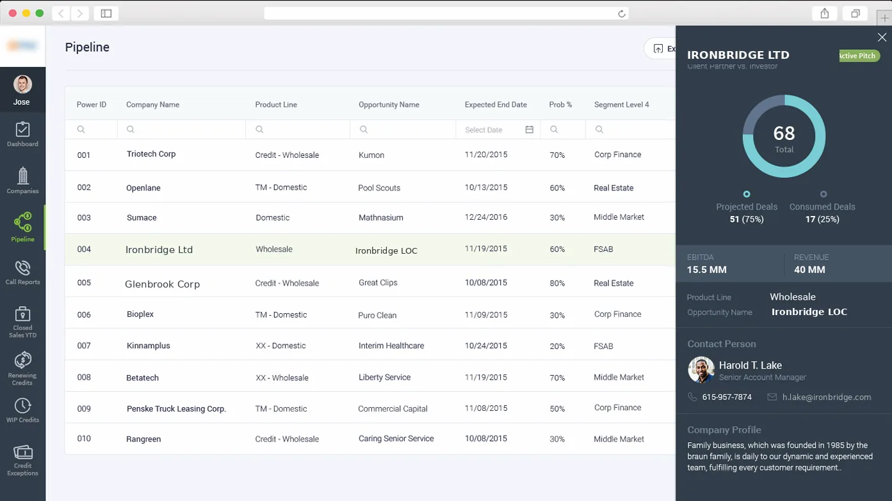
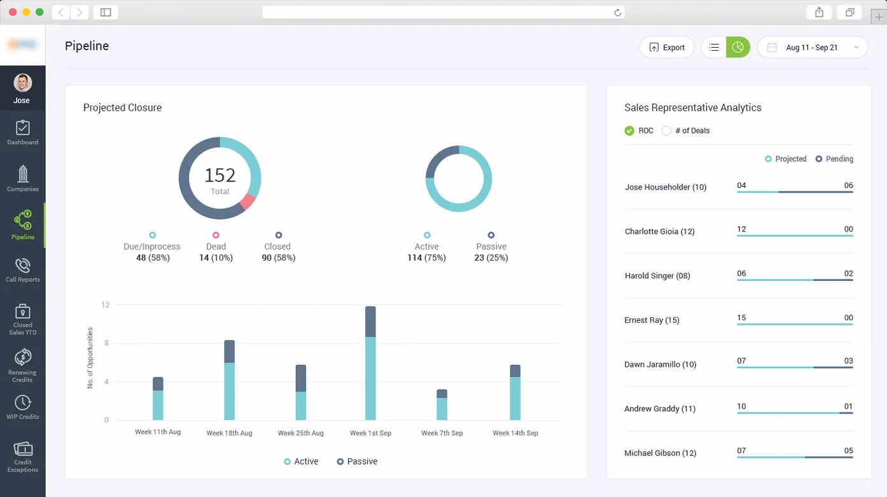
Savings that came from the system, not the redesign
The savings were durable because they came from the system, not from the redesign. Built in Axure with shared Photoshop assets and handed to engineering as a single source of truth, the component library carried every subsequent module. Pipeline, side panel, analytics, and detail views were all assembled from the same parts.
What the system carried forward
Subsequent CRM modules shipped from the existing component library rather than being custom-built each time, compressing the development cycle for adjacent banker tools.
Patterns repeated across surfaces meant new joiners ramped up against shared mental models. Side panels, status badges, and pipeline grammar behaved the same whether they were on contacts, deals, or call reports.
Components handed to development with documented states reduced ambiguity in implementation, shortened QA cycles, and gave engineering a single source of truth instead of per-feature interpretation.
The component library outlived the original engagement and became the bank's house pattern for adjacent CRM workflows. The same vocabulary now serves dispute, credit, and deal-management surfaces.
The savings were a systems metric. The components extended across CRM modules well beyond the original engagement, and design systems have been the spine of how I work since.
Fixing a clinical inventory system staff had stopped using
A multi-hospital healthcare network had invested in a clinical inventory management system to track medical supplies across stores, pharmacies, and operating theatres. Most staff had stopped using it — shadow Excel spreadsheets did the daily work, because the official system was too slow and confusing for the job.
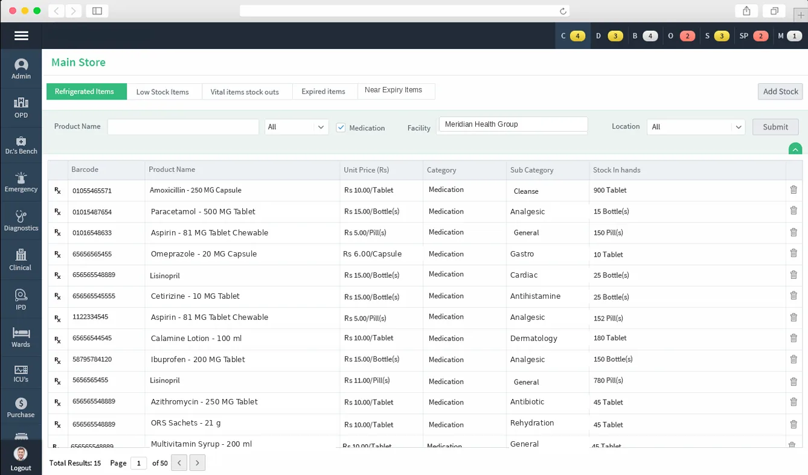
Validated with stakeholders across stores, pharmacy and OT before any launch — wireframes first, then the redesigned prototype, tested with the people who would run it daily. The redesign moved when I stopped designing for “the inventory user” and started designing for the store manager, the pharmacy manager and the OT manager separately.
Replacing an 8-page legacy quote form with a 3-step cloud workflow
The cloud communications provider's quoting tool was a single eight-page form. Sales agents scrolled through every service category — Voice Connectivity, Data, Business Continuity, Wireless — even when quoting one product. Validation was minimal, the layout pre-dated responsive design, and new agents took weeks to ramp.
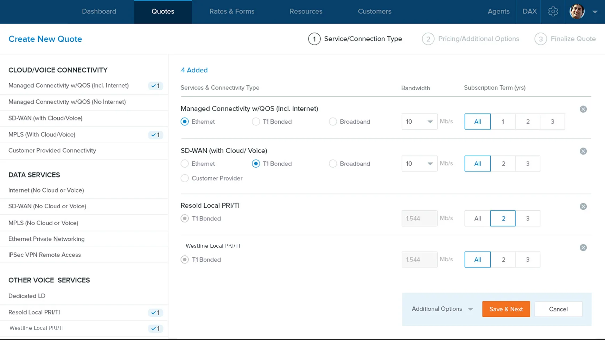
Restructuring receiving across a four-surface serialisation domain
The serialisation engagement spanned four product surfaces handling millions of daily transactions globally — the desktop receiving redesign was the most visible deliverable. The work spanned two successive platform rebuilds: a low-code Gen-1 platform that replaced a legacy serialisation cloud, and a no-code Gen-2 platform that followed.
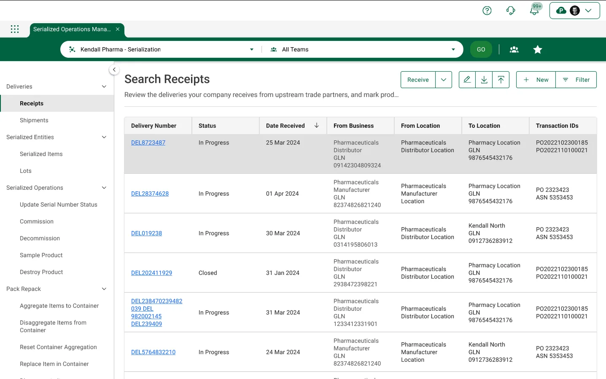
Founding designer for a regulated EdTech platform — and the pivot from consulting to SaaS
9ine's consultants worked with each school 1:1, mostly out of Excel. The brief I came in on was strategic: build a platform the consultants could deploy to schools, so 9ine could grow without proportionally hiring more consultants.
I joined without GDPR knowledge. The first six weeks were learning the regulatory domain: UK Data Protection Act, GDPR, RoPA, DPIAs, third-party vendor risk, alongside studying how the consultants worked with schools. Only after that did design start. What followed: a design system from blank page; eight platform modules; a four-tier permission architecture; in-app training for users learning compliance work for the first time; and a subscription model where every module could be turned on per school.
Eight modules, one design system, four user tiers
The platform had to handle three concurrent design problems: real GDPR/cybersecurity workflow, a permission model that fit how 9ine delivered the service, and a subscription model that let each school enable only the modules they paid for. The design system carried all three.
Modules I designed
Project Groups, Projects, Risks, Issues, Lessons, Tasks. The dashboard surface shown on the previous slide.
RoPAs, DPIAs, vendor assessments, retention policies. Pre-configured templates for school-specific data processing.
GDPR-compliant retention scheduling and destruction logging. Deep-dived on the next slide.
Stakeholder records linking owners, members, and notified users to compliance artefacts across the platform.
Cyber and data-breach incident reporting with documented response trails and regulator notification timelines.
Tasks, checklists, Gantt views. Compliance work treated as project work — same primitives as Governance.
EdTech vendor inventory, application catalogue, contract tracking. The 360-degree EdTech management surface.
In-app training. Compliance-officer onboarding for users learning GDPR work for the first time, surfaced on the Home dashboard.
Four-tier permission architecture
The permission model mirrored how 9ine delivered the service: schools subscribed module-by-module; each module was role-gated within the school; and 9ine's own consultants had a top-tier admin role to operate alongside their clients.
Access to specific modules within a single school, scoped to their compliance role (e.g. department lead, data champion).
Manages users, modules, and compliance state for one school. Subscription controls live here.
Multi-school role for MATs and federation networks. Dashboards aggregate across schools in the group.
Top-tier admin assigned to a client. Full access to operate the platform alongside the school during onboarding and ongoing engagement.
The strategic point: the platform gave 9ine a structure to grow without proportionally hiring consultants. Each module a school enabled was one more thing the consultant didn't have to do manually in Excel. The permission architecture was designed to solve that.
Retention Management: daily-use GDPR tooling for Data Protection Officers
Retention is a daily compliance task: every personal-data record in a school has a lawful retention period, after which it must be destroyed and the destruction logged. The legacy approach was Excel files maintained per-school by 9ine's consultants. The platform module let the school's own DPO own the work directly.
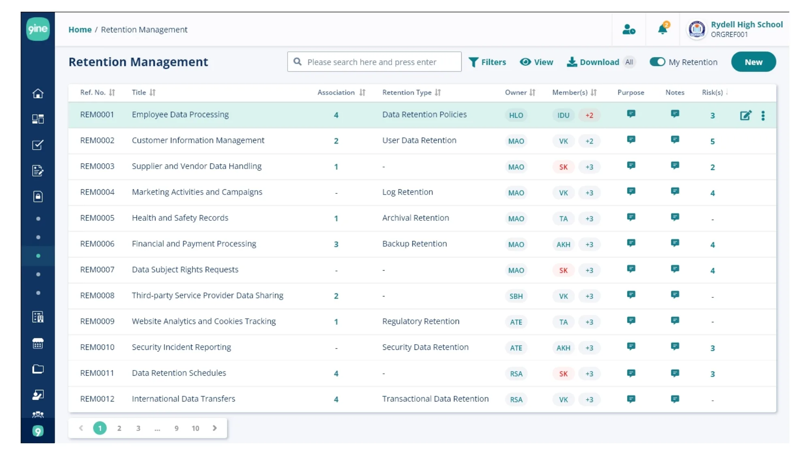
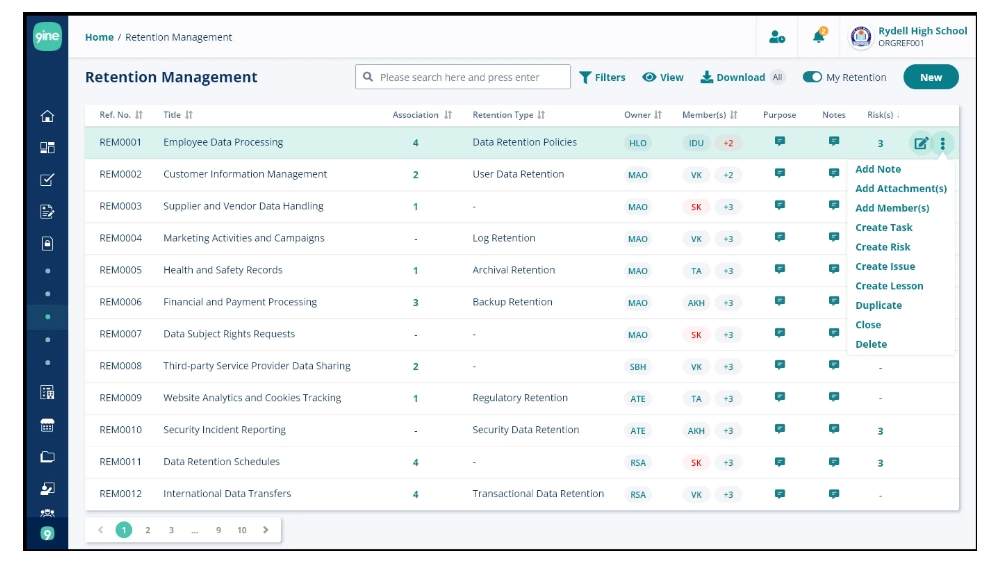
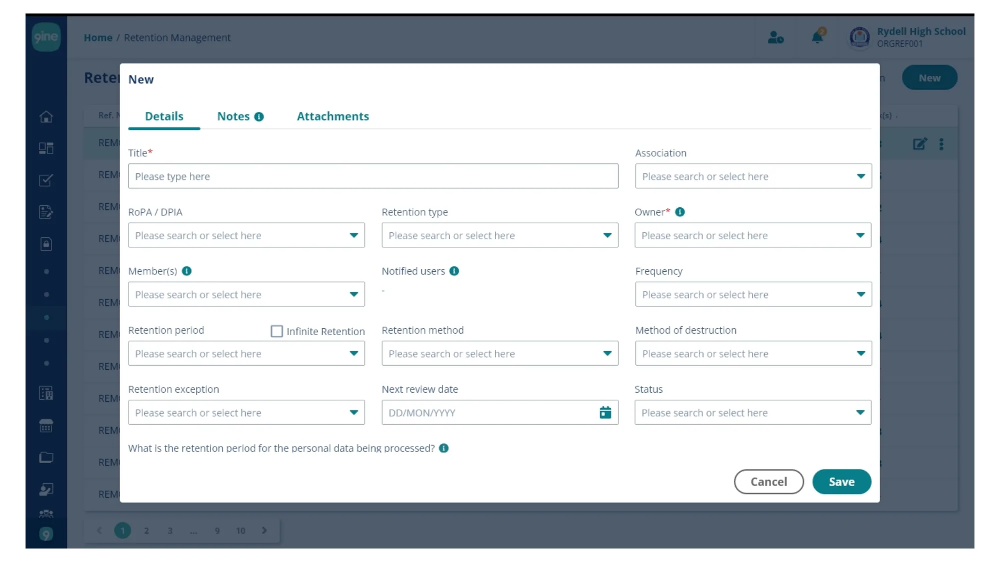
Discovery was lighter than my agency or in-house work. Inputs were DPO interviews, the consultants' existing Excel templates, and direct usage by the founding consultants who became the platform's first internal testers. Designs went through DPO review pre-launch but not the SUS-driven validation cycles I ran on Cases 01–06. The compounding test was deployment — the platform now serves schools globally, and the modules I designed are still the spine of the product (visible on 9ine.com today).
Research, systems, collaboration
Four habits run through everything in this deck. They're also what I'd bring to whatever you put on the table.
Stakeholder interviews, contextual inquiry, journey mapping, heuristic evaluation come before any pixel. Most of the cases in this portfolio turned on something I found in research, not on a visual decision.
Component libraries, design tokens, pattern documentation: scalable systems that let teams ship faster while maintaining consistency. The compounding savings on the Banking CRM case came from the system I put in place, not from the redesign itself.
Working closely with product, engineering, QA, and stakeholders to align on what to build and why. The work I'm proudest of always came from a tight loop with engineering and a clear-eyed PM.
Twelve reports at Koru, a founding team of five at 9ine, sole designer at Wipro. Solo or leading, the practice stays the same: document decisions, systematise patterns, and leave every team able to run without me. The design systems I left behind kept being used after I moved on.
Capabilities
what I bring to the day-to-day work- Contextual inquiry & shadowing
- Stakeholder & expert-user interviews
- Usability testing & heuristic evaluation
- Survey design & synthesis, n-driven
- Journey mapping & personas
- Design system architecture & governance
- Cross-team service & workflow mapping
- Scalable component libraries
- Day-1 / Day-2 scope negotiation
- State-machine & process design
- Team mentorship, 12 reports at peak
- Stakeholder facilitation in regulated settings
- Workshops: affinity, prioritisation, alignment
- Engineering-embedded delivery
- Agile & Scrum delivery
- Figma, Miro, Adobe XD
- Jira, GitHub, AI-assisted workflows
- WCAG 2.2 AA as working practice
- Data visualisation for expert users
Where this is heading: the work keeps pulling me from screens towards the systems around them, how teams, tools and handoffs behave end to end. Service design is the surface I want to grow into next; thirteen years of dense-workflow UX is the foundation I bring to it.
Thank you.
I'm looking for UX roles where high-stakes software is the daily problem. Thirteen years ran wider than any single sector: trading floors, hospital networks, pharma supply chains, telecom operations centres, e-commerce, kiosks, data-centre tooling, even a food-ordering app — plus a GDPR platform designed from blank page as its founding designer. The setting keeps changing; reading how expert users actually work is the constant.
If your team owns software that experts spend their whole day in, and it's harder to use than it should be, I'd like to hear about it.